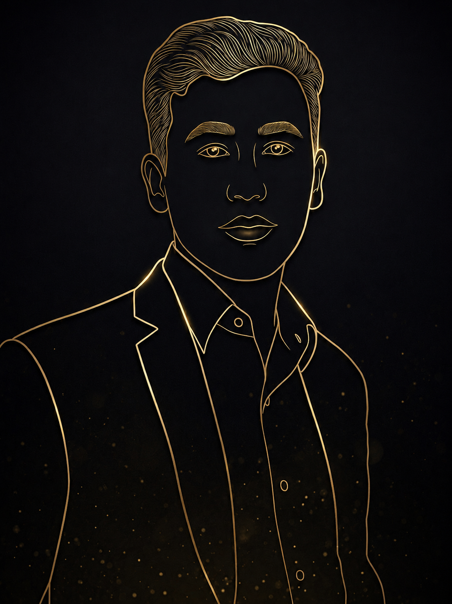

Designing AI-powered enterprise products that simplify complex workflows.
I am an AI Product Designer specializing in B2B SaaS. I transform massive datasets and intricate user flows into intuitive, high-performance web products through rigorous systems thinking and modern design craft.

Selected Work
Product Design & ResearchGymogram — Social Fitness Platform
A fitness experience that combines personalized workouts, community engagement, and gamification.
View case study →
Job Pulse · Alert Dashboard
A real-time job aggregation dashboard scanning RSS feeds with customizable filters, a sleek UI, and automated alerts.

AI-Powered Bench Sales Platform
Designed an AI-powered Bench Sales platform that simplifies consultant tracking, submission management, and recruiter decision-making.
View case study →
Laundry Service · UX Case Study
End-to-end research and design for an on‑demand laundry app — addressing transparency, tracking, and simplicity.
View case study →
Stripe Homepage
How Stripe communicates a complex product to multiple audiences while guiding them toward conversion.
View research →
Zoho Inventory
Reverse‑engineering a complex B2B inventory system and imagining an AI‑powered predictive layer.
View research →Philosophy
Simplicity through thoughtful design. AI that empowers people. Every interaction should make work clearer, faster, and more meaningful.
I design digital products that combine human-centered design, systems thinking, and AI to solve complex problems. My focus is on creating intuitive, scalable experiences that improve collaboration, simplify workflows, and help people and businesses achieve better outcomes.
Years in product design
Enterprise Products Designed
AI as Design Partner
A systematic framework describing how I incorporate agentic AI and machine intelligence throughout my end-to-end design process. Click any phase below to examine details.
User pattern discovery & AI qualitative clustering
Discovery Phase
I feed raw stakeholder transcripts, ticket lists, and user feedback logs into LLMs to automatically cluster behaviors, pain points, and friction points. This drastically speeds up finding initial directional hypotheses.
AI extracts core user needs; I craft strategic requirements
Research Synthesis
The AI highlights themes and organizes them into functional buckets. I validate these findings, remove hallucinations, and formulate the final design strategy and product requirements.
Collaborative flow synthesis using real-time mockups
Journey Mapping
We generate draft flows with AI mapping tools. We review these drafts with engineering teams to flag edge cases and technical constraints before entering the high-fidelity UI design phase.
Code-based prototypes to test accessibility & logic
Rapid Prototyping
Using code assistants to write functional HTML/JS prototypes of complex UI transitions and custom keyboard navigation logic, which helps with interactive user testing.
Real-world data checks & automated product optimization
Launch & Learn
Post-launch telemetry is clustered by AI agents to highlight recurring user errors, page slowdowns, or friction points, which feeds directly back into the next design iteration.